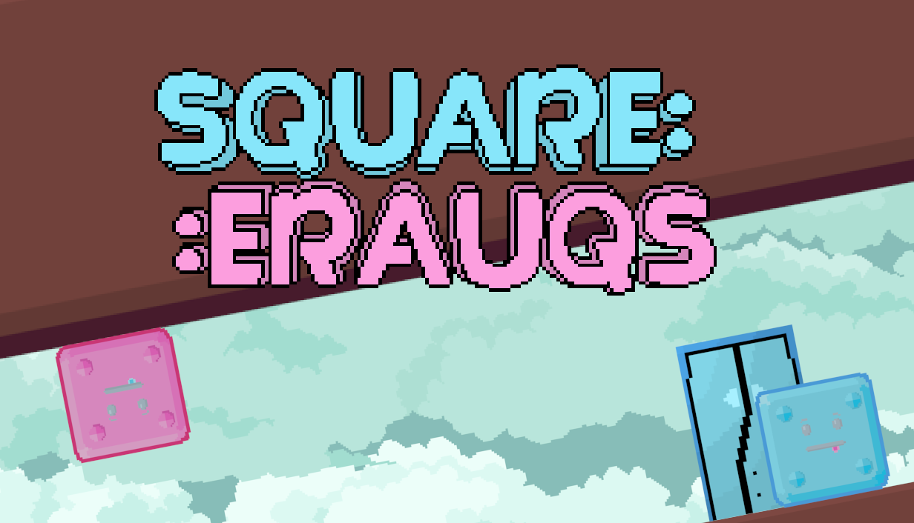

2D · 퍼즐 · 플랫포머 · Single Play · Unity

서로 다른 방향의 중력을 받는 핑크와 블루를 움직여 각자의 색에 맞는 문으로 이끄는 것이 목표입니다.
다양한 아이템을 사용하거나, 시점을 변경하여 퍼즐을 풀어보세요!
Unity로 개발한 퍼즐 플랫포머 게임입니다. 프로그래밍, 기획, 아트 담당이 나뉜 팀 단위 프로젝트로 진행되었습니다.
실제 Steam 출시까지 완료되었으며, 출시 후에도 지속적인 bug fix와 업데이트가 이뤄지고 있습니다.